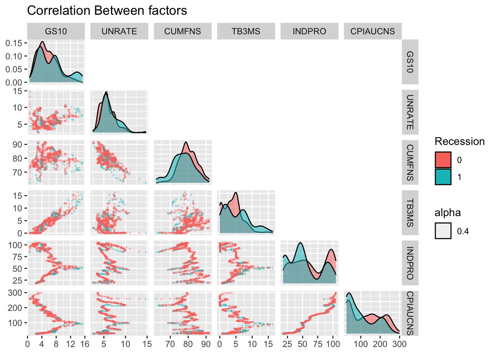
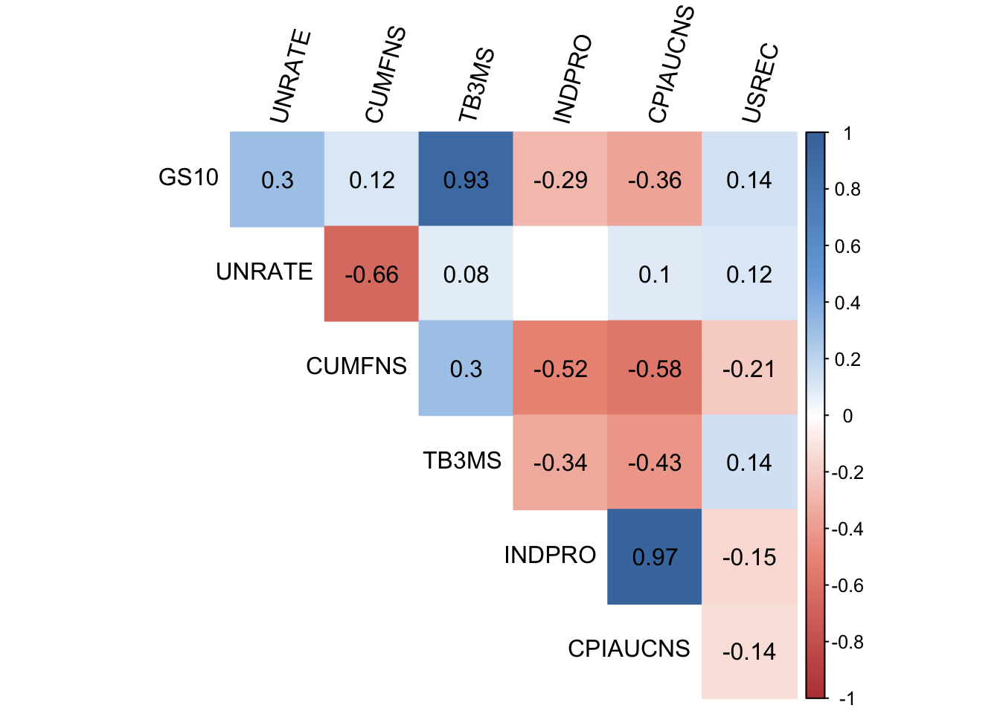
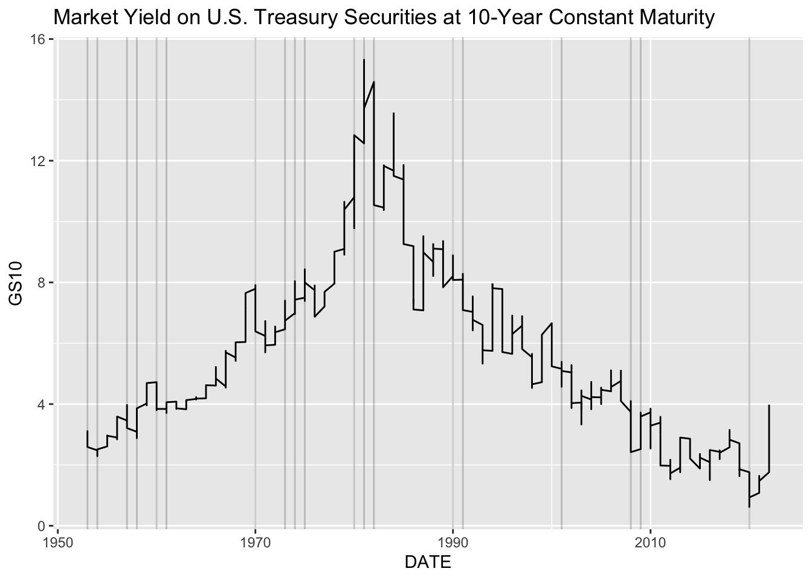
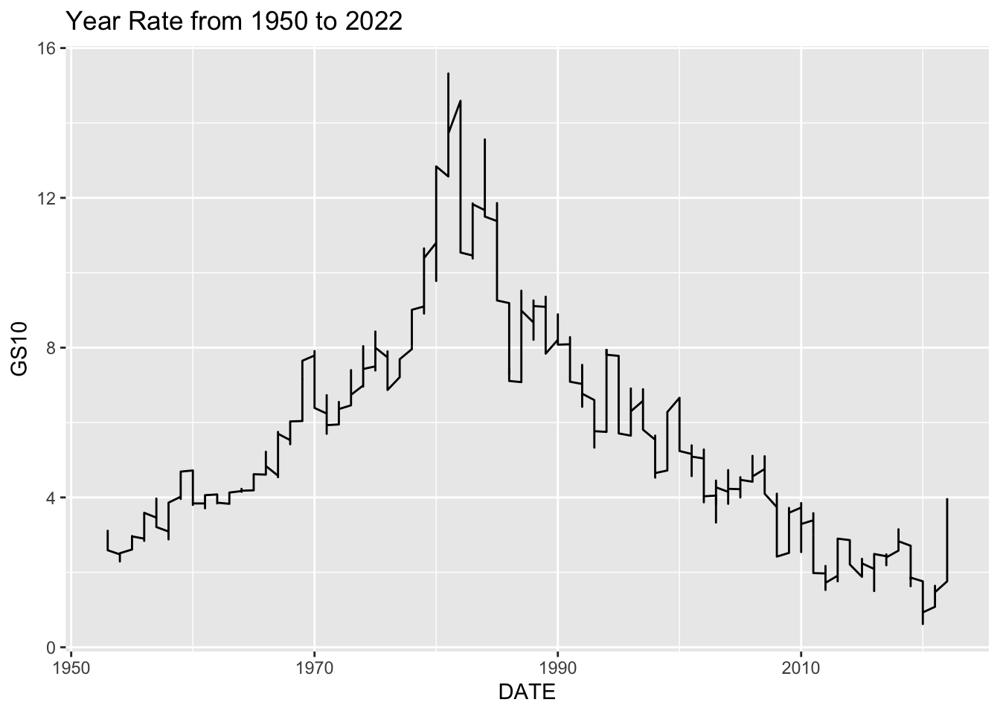
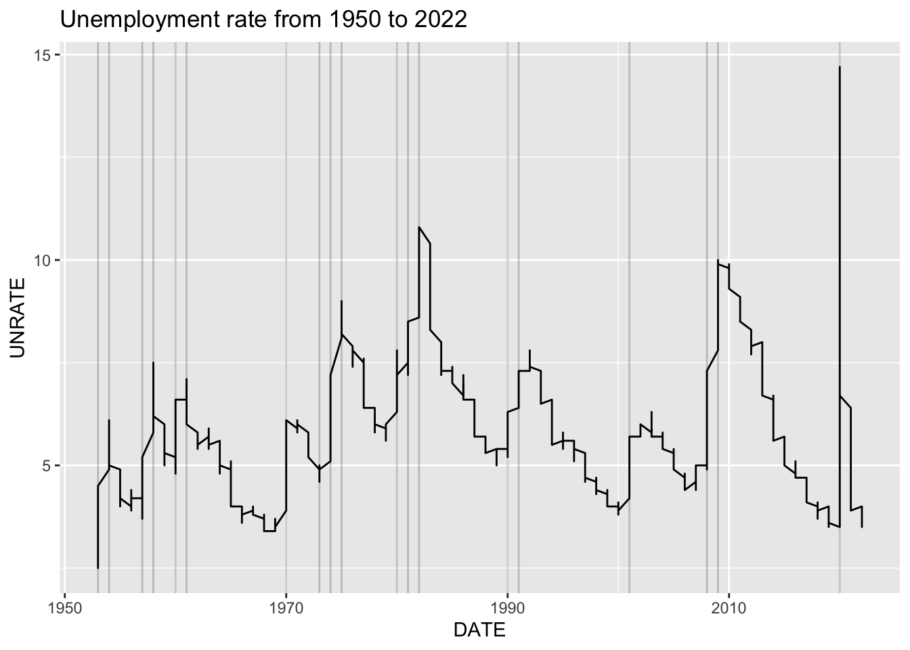

Chapter 4 Results
install.packages("devtools")## Error in install.packages : Updating loaded packageslibrary(devtools)
install_github("ggobi/ggally")## These packages have more recent versions available.
## It is recommended to update all of them.
## Which would you like to update?
##
## 1: All
## 2: CRAN packages only
## 3: None
## 4: cli (3.4.0 -> 3.4.1) [CRAN]
## 5: vctrs (0.4.1 -> 0.5.1) [CRAN]
## 6: rlang (1.0.5 -> 1.0.6) [CRAN]
## 7: lifecycle (1.0.2 -> 1.0.3) [CRAN]
## 8: cpp11 (0.4.2 -> 0.4.3) [CRAN]
## 9: tidyselect (1.1.2 -> 1.2.0) [CRAN]
## 10: purrr (0.3.4 -> 0.3.5) [CRAN]
## 11: isoband (0.2.5 -> 0.2.6) [CRAN]
## 12: bit (4.0.4 -> 4.0.5) [CRAN]
## 13: vroom (1.5.7 -> 1.6.0) [CRAN]
## 14: crayon (1.5.1 -> 1.5.2) [CRAN]
## 15: readr (2.1.2 -> 2.1.3) [CRAN]
## 16: ggplot2 (3.3.6 -> 3.4.0) [CRAN]
## 17: stringr (1.4.1 -> 1.5.0) [CRAN]
## 18: plyr (1.8.7 -> 1.8.8) [CRAN]
##
##
checking for file ‘/private/var/folders/gl/gc9370p92px37cdb3gs2xdrc0000gn/T/RtmpshbBiw/remotes8d3496abe22/ggobi-ggally-4d8fa81/DESCRIPTION’ ...
✔ checking for file ‘/private/var/folders/gl/gc9370p92px37cdb3gs2xdrc0000gn/T/RtmpshbBiw/remotes8d3496abe22/ggobi-ggally-4d8fa81/DESCRIPTION’
##
─ preparing ‘GGally’:
##
checking DESCRIPTION meta-information ...
✔ checking DESCRIPTION meta-information
##
─ installing the package to process help pages
##
─ checking for LF line-endings in source and make files and shell scripts (3.3s)
##
─ checking for empty or unneeded directories
## Removed empty directory ‘GGally/notes’
## Removed empty directory ‘GGally/scripts’
##
─ building ‘GGally_2.1.2.9000.tar.gz’
##
## install.packages("GGally")##
## The downloaded binary packages are in
## /var/folders/gl/gc9370p92px37cdb3gs2xdrc0000gn/T//RtmpshbBiw/downloaded_packagesinstall.packages("corrplot")## Error in install.packages : Updating loaded packageslibrary(ggplot2)
library(GGally)
library(tidyr)
library(tidyverse)
library(scales)
library(corrplot)x <- factor(data$USREC)
ggplot(data, aes(x)) +
geom_bar()+
ggtitle("Recession/ Non Recession Frequency") + labs (x = "Recession", y = "Count")
Recession <- as.factor(data$USREC)
ggpairs(data,legend = 1,columns=2:7,aes(color= Recession, alpha = 0.4),
upper = list(continuous = "blank", combo = "box_no_facet"),
lower = list(continuous = wrap("points", alpha = 0.3, size=0.3),
combo = wrap("dot", alpha = 0.4, size=0.3) ), title = "Correlation Between factors") +
theme(legend.position = "right")
df <- data[ -c(1) ]
corrplot2 <- function(data,
method = "pearson",
sig.level = 0.05,
order = "original",
diag = FALSE,
type = "upper",
tl.srt = 90,
number.font = 1,
number.cex = 1,
mar = c(0, 0, 0, 0)) {
data_incomplete <- data
data <- data[complete.cases(data), ]
mat <- cor(data, method = method)
cor.mtest <- function(mat, method) {
mat <- as.matrix(mat)
n <- ncol(mat)
p.mat <- matrix(NA, n, n)
diag(p.mat) <- 0
for (i in 1:(n - 1)) {
for (j in (i + 1):n) {
tmp <- cor.test(mat[, i], mat[, j], method = method)
p.mat[i, j] <- p.mat[j, i] <- tmp$p.value
}
}
colnames(p.mat) <- rownames(p.mat) <- colnames(mat)
p.mat
}
p.mat <- cor.mtest(data, method = method)
col <- colorRampPalette(c("#BB4444", "#EE9988", "#FFFFFF", "#77AADD", "#4477AA"))
corrplot(mat,
method = "color", col = col(200), number.font = number.font,
mar = mar, number.cex = number.cex,
type = type, order = order,
addCoef.col = "black", # add correlation coefficient
tl.col = "black", tl.srt = tl.srt, # rotation of text labels
# combine with significance level
p.mat = p.mat, sig.level = sig.level, insig = "blank",
# hide correlation coefficients on the diagonal
diag = diag
)
}
corrplot2(
data = df,
method = "pearson",
sig.level = 0.05,
order = "original",
diag = FALSE,
type = "upper",
tl.srt = 75,
) 
ggparcoord(data, columns = 2:8, groupColumn=8, alphaLines = .1, scale = "uniminmax",
mapping=aes(color=as.factor(USREC)))+
scale_color_discrete("USREC")+
ggtitle("Parallel plot of different variables") 
recession_dates <- filter(data, USREC == "1")
recession_years <- unique(lubridate::year(as.Date(recession_dates$DATE)))
data_copy <- data
data_copy$USREC <- data_copy$USREC * 100
data_copy$DATE <- lubridate::year(as.Date(data_copy$DATE))
tidy_data <- data_copy %>% pivot_longer(cols = -c("DATE","USREC"), names_to = "Factors") |> mutate(Factors = forcats::fct_reorder2(Factors,DATE, value))
ggp <- ggplot(tidy_data, aes(DATE, value, color = Factors)) +
geom_line() +
ggtitle("Factors and Recession Relation") + labs (x = "", y = "Value") +
theme_grey(16) +
theme(legend.title = element_blank()) + scale_y_continuous(limits = c(0, 100,5))
ggp + geom_vline(xintercept = recession_years, alpha = 0.2) 
recession_dates <- filter(data, USREC == "1")
recession_years <- unique(lubridate::year(as.Date(recession_dates$DATE)))
ggplot(data_copy,
aes(DATE, GS10)) +
geom_line() +
ggtitle("Year Rate from 1950 to 2022")+ geom_vline(xintercept = recession_years, alpha = 0.2) 
ggplot(data_copy,
aes(DATE, UNRATE)) +
geom_line() +
ggtitle("Unemployment rate from 1950 to 2022")+geom_vline(xintercept = recession_years, alpha = 0.2) 
ggplot(data_copy,
aes(DATE, TB3MS)) +
geom_line() +geom_vline(xintercept = recession_years, alpha = 0.2) +
ggtitle("Months bill from 1950 to 2022")